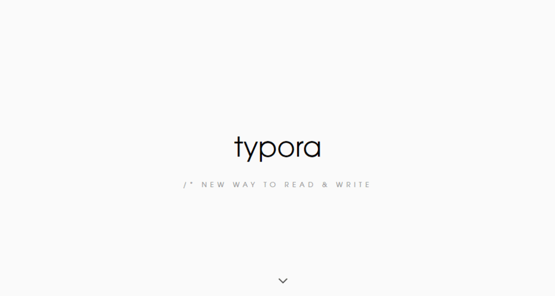
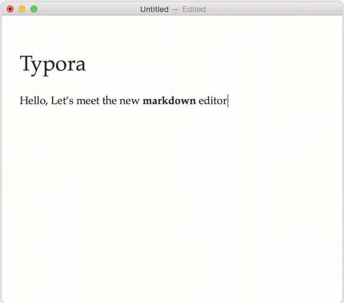

typora
1.代码块：
1 | //代码示例 |
2.标题
1 | //标题语法（记得间隔空格） |
一级标题
二级标题
三级标题
四级标题
3.字体
1 | //加粗 |
hello world
==hello world==hello world
hello world
4.引用
1 | //引用语法 |
引用内容1
引用内容2
引用内容3
5.分割线
1 | //分割线1 |
//分割线1
//分割线2
6.图片插入
1 | //在线图片 |


7.超链接
1 | //超链接语法 |
8.列表
1 | //无序列表 |
- 目录1
- 目录2
- 目录3
- 目录
- 目录
- 目录
本博客所有文章除特别声明外，均采用 CC BY-NC-SA 4.0 许可协议。转载请注明来自 我有嘉宾，鼓瑟吹笙！
 wechat
wechat alipay
alipay
评论